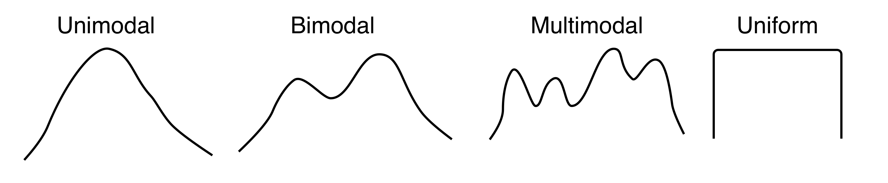
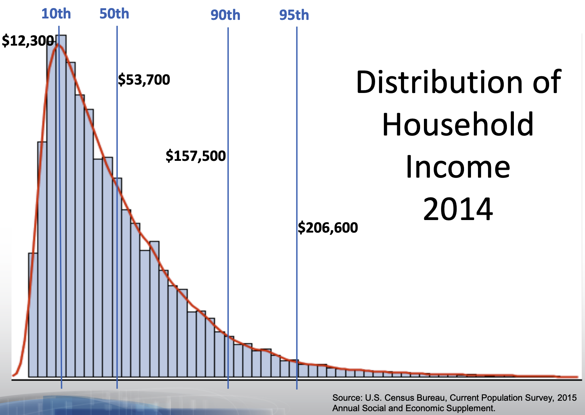

| bill_length_mm |
|---|
| 39.1 |
| 39.5 |
| 40.3 |
| 36.7 |
| 39.3 |
| 38.9 |
| 39.2 |
| 41.1 |
| 38.6 |
| 34.6 |
| 36.6 |
| 38.7 |
| 42.5 |
| 34.4 |
| 46.0 |
| 37.8 |
Summarizing Numerical Data
Seeing the forest for the trees.
WarningThis page covers…
- Plots to summarize numerical data
- dot plots
- histograms
- binwidth
- number of bins
- density plots
- bandwidth
- Describing distributions:
- Statistic: any single number computed from all of your data.
- Mean, variance, etc are all statistics.
- We can always invent new ones - it depends on our goals.
- Measures of center:
- mean: optimal in many ways, but sensitive to outliers
- median: middle-most value, often less optimal, but robust to outliers
- mode: what’s the most common specific value in a dataset?
- Measures of spread:
- Range: distance from the biggest to smallest value
- A crude measure of how much ground the data covers.
- Variance / sample variance
- Average squared distance from numbers to their mean
- Standard deviation / sample standard deviation
- Square root of variance / sample variance
- More interpretable. Roughly, how far a typical number is from the mean.
- Mean Absolute Deviation
- Average absolute distance from numbers to the mean
- At first seems more intuitive, but less mathematically useful in most cases
- Inter-Quartile Range (IQR)
- How much ground does the middle 50% of the data cover?
- Specifically, the distance from the Q3 value (75th percentile) and Q1 (25th percentile)
- Robust to outliers
- Range: distance from the biggest to smallest value
- Statistic: any single number computed from all of your data.
- Man feigns madness, contemplates life and death, and seeks revenge.
- Son avenges his father, and it only takes four hours.
- A tragedy written by the English playwright around 1600.
- 29,551 words on a page.
You may recognize each of these as summaries of the play, “Hamlet”. None of these are wrong, per se, but they do focus on very different aspects of the work. Summarizing always involves omitting things. Summarizing something as rich and complex as Hamlet involves a large degree of omission; we’re reducing a document of 29,551 words down to a single sentence or phrase, after all. But summarization also involves important choices around what to include, designed to make something about it clearer.
The same is true of plots and graphs, which are summaries in their own right. They reduce a large, complex dataset to some lines and rectangles. We need to include some things, but hide others that would distract from the point we’re making.
Some guidance to bear in mind:
What should I include?
- Qualities relevant to the question you’re answering or claim you’re making
- Features that are aligned with the interest of your audience.
What should I omit?
- Qualities that are irrelevant, distracting, or deceptive
- Repetitive or assumed information (know your audience…)
We’ll keep this guidance in mind as we discuss how to summarize numerical data with graphics, in words, and with statistics. Specifically, we will learn how to:
- Summarize one numerical variable
- Summarize one numerical variable broken up into levels of a second, categorical variable.
Summarizing two numerical variables is a task which deserves its own set of notes; that set of notes will come later on!
Constructing Graphical Summaries
Let’s turn to an example admittedly less complex than Hamlet: the Palmer penguins. One of the numerical variables Dr. Gorman recorded was the length of the bill in millimeters. The values of the first 16 penguins are:

We have many options for different plot types that we could use to summarize this data graphically. To understand the differences, it’s helpful to lay out the criterion that we hold for a summary to be a success. Let’s call those criteria the desiderata, a word meaning “that which is desired or needed”.
For our first graphic, let’s set a high bar.
The most commonly used graphic that fulfills this criterion is the dot plot.

The dot plot is, in effect, a one-dimensional scatter plot. Each observation shows up as a dot and its value corresponds to its location along the x-axis. Importantly, it fulfills our desiderata: given this graphic, one can recreate the original data perfectly. There was no information loss.
As the number of observations grow, however, this sort of graphical summary becomes unwieldy. Instead of trying to show the value of every observation, it becomes more practical to focus on the general distribution of the data overall. Let’s consider a broader goal for our graphic.
There are several types of graphics that meet this criterion: the histogram, the density plot, and the violin plot.
Histograms

At first glance, a histogram looks like deceptively like a bar chart. There are bars arranged along the x-axis according to their values, and the height is how many penguins that bar represents. However, the bars in a true bar chart say “how many observations have this exact x value?” E.g. how many penguins have exactly this bill length or exactly this species.
The bars in a histogram, by contrast, show how many observations fall in a certain range of values.
The first step in creating a histogram is to divide the full range of possible values into bins of equal size. You can set the number of bins explicitly, or you can let R pick some reasonable defaults. The second step is to count up the number of observations that occur in each bin.
Some bins will have no observations in that range (where we see no bar at all), some may just have one observation, and some have many. The tallest bar in the plot above, with a count of 3, corresponds to all penguins with bill lengths from 39.09 to 39.30 (there are three such penguins, with bill lengths 39.1, 39.2, and 39.3).
You can tweak the histogram to be more or less coarse. One way is to change the number of bins, and let R automatically determine how wide that makes them. You can also do it the other way – you set how wide each bin is (binwidth), and R figures out how many bins it needs to cover the range.
Setting the right binwidth (or number of bins) changes the story that pops out of the plot. Here are four histograms of the same data that use four different binwidths. Notice how they each give a different “feel” to the distribution of penguin bill sizes.

If you are interested in only the coarsest structure in the distribution, best to use the larger binwidths. If you want to see more detailed structure, a smaller binwidth is better.
There is a saying that warns about times when you “can’t see the forest for the trees,” being overwhelmed by small details (the trees) and unable to see the bigger picture (the forest). The histogram, as a graphical tool for summarizing the distribution of a numerical variable, offers a way out. Through your choice of binwidth, you can determine how much to focus on the forest (large binwidth) or the trees (small binwidth).
Density plots
Imagine that you build a histogram, then lay a cooked piece of spaghetti over the top of it. The curve created by the pasta is a form of a density plot.

Besides the shift from bars to a smooth line, the density plot also changes the y-axis to feature a quantity called “density”. We will return to define this term later in the course, but it’s sufficient to know that the actual values on the y-axis of a density plot are rarely useful. The important information is relative: a part of the curve that is twice as high as another has roughly twice the number of observations near it.
The density plot, like the histogram, offers the ability to balance fidelity to the individual observations against a more general shape of the distribution. You can tip the balance to feature what you find most interesting by adjusting the bandwidth of the density plot.
bandwidth is sort of saying, “how stiff is this spaghetti?” Low values make for soft, bendy spaghetti, high values make stiff, not-bending-much spaghetti.

A density curve tends to convey the overall shape of a distribution more quickly than does a histogram, but be sure to experiment with different bandwidths. Strange but important features of a distribution can be hidden behind a density curve that is too smooth, and broader trends can be lost if the curve is too loose and wavy.
Violin plots
Often we’re interested not in the distribution of a single variable (like bill length), but in the way the distribution of that variable changes from one group of observational units to another (say, different species). Let’s add this item to our list of criteria for a statistical graphic.
There are several different ways to compare the distribution of a variable across two or more groups, but one of the most useful is the violin plot. Here is a violin plot of the distribution of bill length across the three species of penguins.

The distribution of bill length in each species is represented by a shape that often looks like a violin but is in fact a simple density curve reflected about its x-axis. This means that you can tinker with a violin plot the same as a density plot, by changing the bandwidth.
A more clear, but information-light graphic is the box plot:

We’ll talk about what the various parts of the box mean after the next section, but intuitively, the box plot conveys a similar story to the violin plot: Adelies have shorter bills than Chinstraps and Gentoos. Box plots have the advantage of making certain specific measures very clear (more on this later). But they don’t have any kind of “smoothness-knob” to reveal more or less detailed information. There are tradeoffs, and the right plot depends on what you’re using it for.
Describing Distributions
The desideratum that we used to construct the histogram and the violin plot include the ability to “depict general characteristics of the distribution”. The most important characteristics of a distribution are its shape, center, and spread.
When describing the shape of a distribution in words, pay attention to its modality and skew. The modality of a distribution captures the number of distinct peaks (or modes) that are present.

A good example of a distribution that would be described as unimodal is the original density plot of bill lengths of 16 Adelie penguins (below left). There is one distinct peak around 39. Although there is another peak around 34, it is not prominent enough to be considered a distinct mode. The distribution of the bill lengths of all 344 penguins (below right), however, can be described as bimodal.

Multiple modes are often a hint that there is something more going on. In the plot to the right above, Chinstraps and Gentoo penguins, which are larger, are clumped under the right mode while the smaller Adelie penguins are dominant in the left mode.
The other important characteristic of the shape of a distribution is its skew.

The skew of a distribution describes the behavior of its tails: whether the right tail stretches out (right skew), the left tail stretches out (left skew), or if both tails are of similar length (symmetric). An example of a persistently right skewed distribution is household income in the United States:

In the US, the richest households have much much higher incomes than most, while the poorest households have incomes that are only a bit lower than most.
When translating a graphical summary of a distribution into words, some degree of judgement must be used. When is a second peak a mode and when is it just a bump in the distribution? When is one of the tails of a distribution long enough to tip the description from being symmetric to being right skewed? You’ll hone your judgement in part through repeated practice: looking at lots of distributions and readings lots of descriptions. You can also let the questions of inclusion and omission be your guide. Is the feature a characteristic relevant to the question you’re answering and the phenomenon you’re studying? Or is it just a distraction from the bigger picture?
Modality and skew capture the shape of the distribution, but how do we describe its center and spread? “Eyeballing it” by looking at a graphic is an option. A more precise option, though, is to calculate a statistic.
Constructing Numerical Summaries
Any numerical summary of a data set - a mean or median, a count or proportion - is a statistic. A statistic is, fundamentally, a mathematical function where the data is the input and the output is a number.

Statisticians don’t just study statistics, but they do construct them. A statistician gets to decide the form of \(f\) and, as with graphics, they construct it to fulfill particular needs.
To examine the properties of common statistics, let’s move to an even simpler data set: a vector called x that holds 11 integers.
\[8, 11, 7, 7, 8, 11, 9, 6, 10, 7, 9\]
Measures of Center
The mean, the median, and the mode are the three standard statistics used to measure the center of a distribution. Despite being widely used, these three are not carved somewhere on a stone tablet. They’re common because they’re useful, and they’re useful because they were constructed very thoughtfully.
Let’s start by laying out some possible criteria for a measure of center.
The (arithmetic) mean fulfills all of these needs.
The function in R: mean()
\[ \frac{8 + 11 + 7 + 7 + 8 + 11 + 9 + 6 + 10 + 7 + 9}{11} = \frac{93}{11} = 8.45 \]
The mean synthesizes the magnitudes by taking their sum, then keeps that sum from getting larger than any of the observations by dividing by \(n\). In order to express this function more generally, we use the following notation
\[ \bar{x} = \frac{x_1 + x_2 + \ldots + x_n}{n} \]
where \(x_1\) is the first observation, \(x_2\) is the second observation, and so on till the \(n^{th}\) observation, \(x_n\); and \(\bar{x}\) is said “x bar”.
The mean is the most commonly used measure of center, but has one notable drawback. What if one of our observations is an outlier, that is, has a value far more extreme than the rest of the data?
Imagine there is a small restaurant, and we have a list of all 8 employees annual salaries (in thousands of dollars)
25 40 35 40 30 30 40 45 500Notice everyone makes about the same amount, $35,000 or so, except the owner, who makes $500,000!
If we ask, “how much do employees at this coffee shop make, generally?” we could simply take the mean
\[ \frac{25 + 40 + 35 + 40 + 30 + 30 + 40 + 45 + 500}{9} = \frac{785}{9} = 87.2 \]
The mean salary is about $87,000/year. That’s… not really representative of what anyone makes. So this statistic, $87,000, isn’t really doing what we need it to do.
With this in mind, let’s alter the first criterion to inspire a different statistic.
If we put the numbers in order from smallest to largest, then the number that is as close as possible to all observations will be the middle number, the median.
The function in R: median()
\[ 25 \quad 30 \quad 30 \quad 35 \quad {\Large 40} \quad 40 \quad 40 \quad 45 \quad 500 \]
As measured by the median, the center of this distribution is $40,000 (recall the mean was $87,000). This seems like a much more reasonable answer to the question, “How much do employees make?” – about $40,000/year.
The median has the desirable property of being resistant (“robust”) to the presence of outliers. See how it responds to the inclusion of another extreme value: a manager who makes $200,000/year
\[ 25 \quad 30 \quad 30 \quad 35 \quad {\Large 40} \quad {\Large 40} \quad 40 \quad 45 \quad 200 \quad 500 \]
We have an even number of values, so we average the middle two. In this case they’re the same, so the median here is still $40,000. Even with this new expensive manager, the median salary is about the same.
This property makes the median the favored statistic for capturing the center of a skewed distribution like this.
What if we took a stricter notion of “closeness”?
That leads us to the measure of the mode, or the most common observation. For our coffee shop data set, the mode is \(30\) (meaning a $30,000 salary).
\[ 0 \quad 25 \quad 30 \quad 30 \quad 35 \quad {\Large 40 \quad 40 \quad 40} \quad 45 \quad 200 \quad 500 \]
The most common salary is $40,000/year.
While using the mode for this data set is sensible, it is common in numerical data for each value to be unique. In that case, there are no repeated values, and no identifiable mode. For this reason, we don’t often use mode to describe the center of a numerical variable.
For categorical data, however, the mode is very useful,
The most common species of penguin among the Palmer penguins is “Adelie.” The modal species is “Adelie.” Trying to compute the mean or the median species will leave you empty-handed. This is one of the lingering lessons of the Taxonomy of Data: the type of variable guides how it is analyzed.
For ordinal categorical data, the median is useful too.
The median didn’t make much sense for species of penguin (what’s the “order” you put them in?), but for variables with a natural order, the middle-most value can be useful.
Say a doctor has some patients, and asks each one how much pain they are in. Each patient chooses one of: none, little, some, lots, and extreme. Their responses are:
\[ some \quad lots \quad none \quad lots \quad some \quad lots \quad little \quad extreme \quad lots \]
We can put them in order and flag the middle value as the “median patient’s pain”:
\[ none \quad little \quad some \quad some \quad {\Large lots} \quad lots \quad lots \quad lots \quad extreme \]
So the median patient is in “lots” of pain.
Measures of Spread
There are many different ways to capture spread or dispersion of data. Here are some basic goals we might hope to achieve with a measure of spread.
These goals are not met by every measure of spread. Here is one such measure of spread which does not meet any of the three!
Range
The range of a set of numbers is simply the maximum number in the dataset minus its minimum.
\[ range = max - min\]
For our set of numbers, the range will be \(5\).
\[ {\Large 6} \quad {\ 7 \quad 7 \quad 7} \quad 8 \quad 8 \quad 9 \quad 9 \quad 10 \quad 11 \quad {\Large 11}\]
Although the first two criterion above are met by the range, the third one is not. The reason is that if we add a number to our set which is greater than the maximum value, or smaller than the minimum value, the value of range will change. Therefore, gathering more data could cause our statistic to grow or shrink.
Here are some measures of spread which do meet all three criterion. They do this by using incorporating some of the measures of center that we have already talked about, such as the mean and the median.
Variance
Specifically, the “sample variance” – if we are only working with a sample of numbers from a larger pool. And we are almost always working with samples – the penguins dataset does not contain literally every penguin in Antarctica.
Sample variance calculation:
- Take the differences from each observation, \(x_i\), to the sample mean \(\bar{x}\);
- square them;
- add them all up (“sum of squares”);
- divide this total by \(n - 1\).
The function in R: var()
\[ s^2 = \frac{1}{n - 1} \sum_{i=1}^{n} \left( x_i - \bar{x}\right)^2 \] This formula is rather dense; don’t worry! We won’t ask you to memorize it. The key is that is fits the three criterion we were hoping for.
Remember, \(\bar{x}\) is the mean. The distance \((x_i - \bar{x})^2\) will be small when \(x_i\) is close to the mean, and large when it’s not. This means the first two criterion are met. Additionally, because we are dividing by a number close to \(n\), (\(n-1\)), the statistic does not grow or shrink with \(n\). This means the last criterion is met!
For our list, the sample variance (\(s^2\)) is 2.87.
WarningWhy the square? (Optional but hopefully interesting read…)
Notice that the variance formula is, essentially, computing the average squared distance from the numbers to their mean. Why is this quantity useful? Why the square?
Two reasons: one practical, one deep.
- The practical reason is that all squared numbers are positive. A “negative” spread doesn’t make much sense.
- Imagine we had two numbers: 6 and 10. The mean is 8. The number 6 is -2 away from the mean, while the number 10 is +2 away. If we average -2 and +2 we get… zero! But 6 and 10 are spread out, not zero! Something is wrong there.
- One solution to this problem is to just take the absolute value of every distance measure before we average them. So instead of averaging -2 and +2, we average +2 and +2, so the average spread is 2. This is actually not a terrible idea – it is a real measure of spread called “mean absolute deviation” and we discuss it below.
- Another solution is to just square the distances before averaging, which also makes them positive. In this example, -2 and +2 will become +4 and +4, for an average spread of 4.
- So which do we use? Why is the square better here? That’s a bit deeper.
- The deep reason has to do with the nature of making many small, random mistakes.
- Let’s say you’re trying to measure the height of your 4 year old niece, Alice, with some measuring tape.
- You know you won’t get it exactly right, down to the billionth of an inch or whatever. No, you’ll be off a bit, for many reasons: the measuring tape itself might bend a little; your hands are not perfectly steady; your energetic niece doesn’t stand perfectly still or stand perfectly straight, and so forth. Each of these mistakes is kind of random and nudges your measurement up or down a little. Your final measurement will be close, but not exactly on, her true height.
- To get more data, you ask a bunch of other family members to measure Alice’s height too. They will also have many small, random mistakes in their measurement, different ones, so they’ll all get slightly different answers.
- If you were to plot everyone’s measurements, it would look like a bell curve (normal distribution). This shape is a consequence of the Central Limit Theorem, which we’ll cover later in the course.
- So what? Well, if you want to make the best guess of Alice’s true height from everyone’s independent, noisy measures, you should take the mean. As you’ll see in the example below, the mean naturally minimizes the squared distance between everyone’s measurements and your guess. When errors are normally distributed like this, the most likely true height of Alice is the mean.
- If instead of the mean of everyone’s measurements, you used the median (middle-most) measurement as your guess, you’d be minimizing the absolute distance to between the measurements and your guess. As it turns out, this is less likely to be correct when errors are normally distributed!
- Again, this is all a consequence of the Central Limit Theorem, which we’ll get to later in the course. Ask your prof for a proof if you’d like to see it (requires calculus, linear algebra).
Here’s an example to demonstrate.
Pretend 3 people measured Alice’s height, and their results were 40, 41, and 45 inches. Clearly you’re not 100% sure what Alice’s true height is, but you want to make a guess. You are deciding whether to use the mean (42) or the median (41) as your guess.
- Using the median (41):
- We say, “I’m guessing Alice is 41 inches tall!”
- We compute the distances between this guess and the measurements. We get
40 - 41 = -1,41 - 41 = 0, and45 - 41 = 4. So the distances (deviations) are -1, 0, and 4. - Mean absolute deviation (distance): \(1.66\overline{6}\)
- If we make these numbers all positive (1, 0, 4), then average them, we get \(1.66\overline{6}\). This is the mean of the positive version (absolute value) of the distances from your guess to the measure (deviation).
- Mean squared deviation = \(5.66\overline{6}\):
- If we square the distances before averaging them, we get \(\frac{(-1)^2 + 0^2 + 4^2}{3} = 5.66\overline{6}\). This is the mean of the square of the distances from your guess to the measure (deviation).
- Using the mean (42):
- This time, we say, “I’m guessing Alice is 42 inches tall!”
- We compute the distances, we get
40 - 42 = -2,42 - 41 = 1, and45 - 42 = 3. So the distances (deviations) are -2, -1, and 3. - Mean absolute deviation = \(2\):
- If we make all those distances positive and average them, we get 2: (the average of 2, 1, and 3).
- Notice this is HIGHER than if we had used the median (41) as our guess, where that led to a mean absolute deviation of only \(1.66\overline{6}\).
- Mean squared deviation = \(4\):
- If we square the distances before averaging them, we get \(\frac{(-2)^2 + (-1)^2 + 3^2}{3} = 4\).
- Notice this is LOWER than the mean squared deviation when we used the median (41) as our guess. There, the a mean absolute deviation was \(5.66\overline{6}\).
Mean and median optimize different things. For reasons we’ll explore more later, the mean gives the more-likely-to-be-right answer when you have many noisy, independent measurements.
Standard Deviation
This is just the square root of the variance. (Technically we’re talking about the sample standard deviation and sample variance here)
\[ s = \sqrt{\frac{1}{n - 1} \sum_{i=1}^{n} \left( x_i - \bar{x}\right)^2} \]
The function in R: sd()
One reason for using the standard deviation is that it is often more interpretable than the variance, since it’s measured in units rather than units squared. You can use the mean and standard deviation to say things like, “The mean is about 11, give or take 2.”
For our list:
\[ s = 1.69 \]
We can say, therefore, that a typical data point is about 1.7 units away from the center.
While the sample variance and sample standard deviation are great for measuring symmetric data (which appear enough in statistics) and also show up a lot in the theory of some topics that we will later discover, they do have their faults.
Namely, when data is not symmetric, the square around \(x_i - \bar{x}\) can cause some issues. Asymmetrical data will have many values \(x_i\) (large or small) which are far from the mean \(\bar{x}\).
If \(x_i - \bar{x}\) is large, then \((x_i - \bar{x})^2\) will be very large. Therefore, \(s^2\) and \(s\) can produce values that are overestimates of the spread of most of the data. Here are two measures of spread which counter-act this.
IQR (Interquartile Range)
Put all the data in order, from smallest to largest. Find the values at the 25th and 75th percentiles (first and third quarters of the data). The distance between these values is the IQR.
Q is for “quartile,” as we are sort of dividing the data into four parts, by size. “Q0” is the smallest value, “Q1” is whatever is at the 25th percentile, “Q2” is the 50th percentile value (the median), “Q3” is the 75th percentile value, and “Q4” is the largest value.
The function in R: IQR()
\[ IQR = Q_3 - Q_1 \]
Let’s calculate the IQR for the list of eleven numbers we’ve been working with. We’ll break it into four even parts.
6 7 7 7 8 8 9 9 10 11 11
↑ ↑ ↑ ↑ ↑
Q0 Q1 Q2 Q3 Q4 - Q1 falls between two numbers, but they’re the same. So Q1 = 7
- Q3 falls between the numbers 9 and 10, so we average them. Q3 = 9.5
\[ IQR = Q_3 - Q_1 = 9.5 - 7 = 2.5 \]
The reason the IQR works well for asymmetric data is because the measure of center it’s based on is the median, not the mean. The median is just the middle point of the data, not a value obtained by calculation of all the numbers in a list. So it’s not impacted when extreme values are tacked onto the end of the list.
Our final measure of spread is another option which is resilient against outliers, but is based off of the mean instead of the median.
Mean Absolute Deviation (MAD)
The \(MAD\) is very similar to the variance \(s^2\), except that:
- we take the absolute distance to the mean (\(x_i - \bar{x}\)) instead of squaring it.
- even if it’s just a sample, we divide the total by \(n\) (never \(n-1\))
\[ MAD: \quad \frac{1}{n}\sum_{i = 1}^n |x_i - \bar{x}| \]
The key difference is the first one. The MAD is great for summarizing skewed distributions because it isn’t bothered too much by the presence of extreme values in a set of numbers. That’s because the absolute value bar just ensures a number is positive; it doesn’t further amplify that number by squaring it.
Summary
A summary of a summaries… this better be brief! Summaries of numerical data - graphical and numerical - often involve choices of what information to include and what information to omit. These choices involve a degree of judgement and knowledge of the criteria that were used to construct the commonly used statistics and graphics.